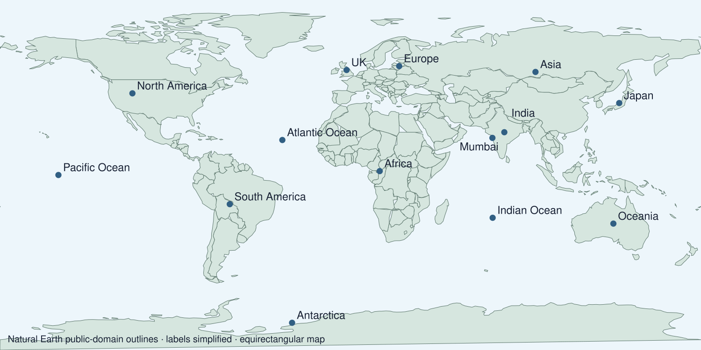

Arrival choices
Previous lesson reminder:
Start with 1 and 2. Try 3 and 4 when ready. Reading and exact scribing are available.
1 Why should a presentation use evidence?
Support: Use the reminder strip or talk it through with an adult.
2 Which meaning fits festival?
Support: Choose: A special period of celebration or remembrance OR Something a person accepts as true.
3 What separate skill check belongs in this assessment?
Support: Use the model evidence anchor assessment or read one relevant card together.
4 How should selected UAS evidence be labelled?
Support: Give a reason when ready.
Stretch: use a precise example or explain which detail supports your answer.
Evidence cards
Read, point or listen. Keep the source label with any detail you use.
D Diwali
Many Hindus mark Diwali with lamps, worship and gatherings. Light can express good overcoming evil and knowledge overcoming ignorance. Practices and stories vary.
Source: Hindu American Foundation, Diwali
Limit: This Hindu explanation does not cover every Hindu practice or other religions’ observances.
H Hanukkah
Hanukkah is a Jewish festival lasting eight nights. Lights recall the Temple’s rededication and the traditional account of oil lasting eight days. A hanukkiah has eight festival lights and a helper light.
Source: Chabad, What is Hanukkah
Limit: This explains one Jewish religious perspective; not all Jewish households observe identically.
O Objects and meanings
A diya is a small lamp associated with Diwali. A hanukkiah is used at Hanukkah. Ask before touching borrowed objects; use an unlit replica or a drawing.
Source: Authored classroom case
Limit: This example does not describe every person or place.
S One family’s celebration plan
Fictional Diwali plan: prepare a welcoming space; arrange unlit lamps with an adult; gather for worship; share food and greetings. This is one sequence, not a rule for every family.
Source: Authored classroom case
Limit: This example does not describe every person or place.
Visual resource
Use this visual with the evidence cards and enquiry questions.

Source: Natural Earth public-domain outlines, labels simplified. Terms of use: https://www.naturalearthdata.com/about/terms-of-use/ (recorded in Sources and checks).
Shared investigation
1. Review what a map answer and a belief answer each need.
2. Practise on different examples before the assessment.
Work with a partner or adult, or use your own table. One person suggests; the other checks the evidence. Swap after one turn. Passing is allowed.
Use the evidence cards and any visual sheet. Follow the two shared steps above, then record one decision.
Support: Read one evidence card together. Highlight a useful detail. Rehearse with: The map shows ___. The accounts are similar in ___ but differ in ___.
Further challenge: Explain one limitation of using only these two accounts.
Supported independent task
Complete this route only. Complete a belief and belonging task and map skills check and bank UAS evidence.
1. Complete an independent map task locating India, the UK and an ocean.
2. Explain one festival feature and compare the two accounts.
3. Select labelled unit evidence and record the support used.
Support: Read one evidence card together. Highlight a useful detail. Rehearse with: The map shows ___. The accounts are similar in ___ but differ in ___. Complete the organiser one space at a time. The map shows ___. The accounts are similar in ___ but differ in ___.
An adult may read or scribe your exact response. They should not choose the answer.
Standard independent task
Complete this route only. Complete a belief and belonging task and map skills check and bank UAS evidence.
1. Complete an independent map task locating India, the UK and an ocean.
2. Explain one festival feature and compare the two accounts.
3. Select labelled unit evidence and record the support used.
Support: The map shows ___. The accounts are similar in ___ but differ in ___.
Check the required evidence and revise one detail.
Stretch independent task
Complete this route only. Complete a belief and belonging task and map skills check and bank UAS evidence.
1. Complete an independent map task locating India, the UK and an ocean.
2. Explain one festival feature and compare the two accounts.
3. Select labelled unit evidence and record the support used.
4. Explain one limitation of using only these two accounts.
Support: Choose the evidence independently. Use the frame only if it helps.
Explain one limitation of using only these two accounts.
Exit ticket
Choose a response mode. You may give your answers privately to an adult.
What separate skill check belongs in this assessment?
How should selected UAS evidence be labelled?
Support: The map shows ___. The accounts are similar in ___ but differ in ___.
Further challenge: Explain one limitation of using only these two accounts.